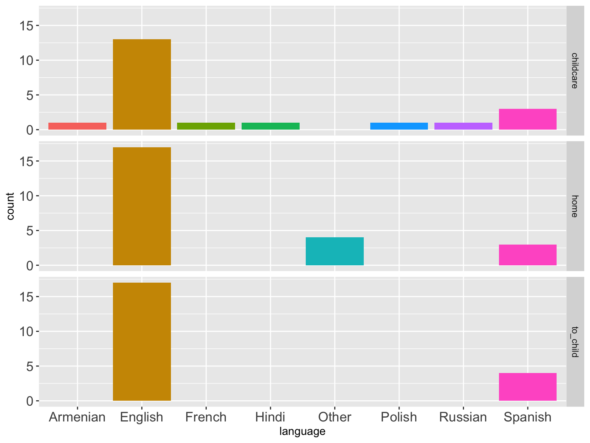

Video as Data & Documentation
Rick O. Gilmore
2019-05-29 15:45:59
Preliminaries


Overview
- Video as data
- Video as documentation
- Sharing ethically & securely with Databrary
- Accelerating discovery
Video as data


If a picture is worth 1,000 words…
A video is worth…
…a paper in Science
Video…
- Captures (& preserves)
- Shows (& helps tell…)
- Expands the scope of inquiry (e.g., words +)
- Provides unparalleled opportunities for reuse
Video as documentation

Even audio
Shared video & audio recordings
- Make research more transparent
- Bolster the reproducibility of procedures
- Accelerate the adoption of new research techniques
- Strengthen findings
- Maximize public investments in research
Sharing video ethically & openly
Video must be protected
- Faces, voices
- Home interiors
- Behaviors that may embarrass participants
Open sharing advances discovery
- Citation expected, but
- No requirement for co-authorship
- No pre-approval of research questions

- Requires researchers secure participant permission to share
- Requires IRB/ethics board approval to share (but not to browse or show for non-research purposes)
- Restricts access to institutionally authorized researchers
Permission to share
Restricting access
- Researchers at institutions
- Formalized by an institutional agreement
- Protects participants, researchers, & institutions
Standardized levels of sharing


Accelerating discovery
Need
- Annotation tools
- More (bigger, denser, diverse) data
- Platforms for discovery
- \(n=900\) infant/mother dyads, \(n=300\) 12-, 18-, and 24-month-olds
- Demographics, health status, media use, temperament
- Modified MB-CDI
- Open protocol, video documentation
Platforms for discovery
vol_8 <- databraryapi::download_session_csv(vol_id = 8)
xtabs(formula = ~ participant.gender + participant.race, data = vol_8) %>%
knitr::kable(.)| Asian | Black or African American | Unknown or not reported | White | ||
|---|---|---|---|---|---|
| 7 | 0 | 0 | 0 | 0 | |
| Female | 0 | 112 | 341 | 4 | 209 |
| Male | 0 | 111 | 410 | 2 | 155 |
race_gender <- vol_8 %>%
filter(participant.gender %in% c('Male', 'Female')) %>%
ggplot() +
aes(x = participant.race, fill = participant.race) +
facet_grid(. ~ participant.gender) +
geom_bar(stat="count") +
coord_flip() +
theme(axis.text.x = element_text(angle = 90, hjust = 1),
legend.position = "bottom")databraryapi::login_db(email = "rogilmore@psu.edu")## [1] TRUEplay_session_id <- 26295
play_vol_id <- 444
vol_444_assets <- list_assets_in_session(vol_id = play_vol_id,
session_id = play_session_id) %>%
select(name, asset_type, asset_id)| name | asset_type | asset_id |
|---|---|---|
| childcare | Comma-separated values | 159177 |
| locomotion | Comma-separated values | 117092 |
| child-birth | Comma-separated values | 116791 |
| family | Comma-separated values | 116790 |
| sleep | Comma-separated values | 116789 |
| language-exposure | Comma-separated values | 116787 |
lang_exp <- databraryapi::read_csv_data_as_df(session_id = play_session_id,
asset_id = 116787)
lang_exp_plot <- lang_exp %>%
ggplot(.) +
aes(x = language, fill = language) +
facet_grid(exposure_context ~ .) +
geom_histogram(stat='count') +
theme(axis.text = element_text(size = 14))
“Clip” your audio or video
- Databrary API returns segments given
start_time, end_time
Prepare your video + other data for sharing
- Conduct scripted, reproducible visualizations & analyses
Shared video data & documentation will
- Make the behavioral sciences more robust & reproducible
- Accelerate discovery
Next steps…
Register for Databrary access
Download, test, and help improve the databraryapi and databrarypy packages
Secure permission to share from research participants
Collect, upload, & share video and audio recordings
Thank you
rogilmore@psu.edu https://gilmore-lab.github.io https://gilmore-lab.github.io/2019-06-MacWhinney-Symposium/databrary-workshop/ @rogilmore
Materials
This talk was produced on 2019-05-29 in RStudio version using R Markdown and the reveal.JS framework. The code and materials used to generate the slides may be found at https://github.com/gilmore-lab/2019-06-MacWhinney-Symposium/databrary-workshop/. Information about the R Session that produced the code is as follows:
sessionInfo()## R version 3.5.2 (2018-12-20)
## Platform: x86_64-apple-darwin15.6.0 (64-bit)
## Running under: macOS Mojave 10.14.5
##
## Matrix products: default
## BLAS: /System/Library/Frameworks/Accelerate.framework/Versions/A/Frameworks/vecLib.framework/Versions/A/libBLAS.dylib
## LAPACK: /Library/Frameworks/R.framework/Versions/3.5/Resources/lib/libRlapack.dylib
##
## locale:
## [1] en_US.UTF-8/en_US.UTF-8/en_US.UTF-8/C/en_US.UTF-8/en_US.UTF-8
##
## attached base packages:
## [1] stats graphics grDevices utils datasets methods base
##
## other attached packages:
## [1] forcats_0.3.0 stringr_1.4.0
## [3] dplyr_0.8.0.1 purrr_0.3.2
## [5] readr_1.3.1 tidyr_0.8.2
## [7] tibble_2.1.1 ggplot2_3.1.0
## [9] tidyverse_1.2.1 databraryapi_0.1.6.9001
##
## loaded via a namespace (and not attached):
## [1] revealjs_0.9 tidyselect_0.2.5 xfun_0.6 reshape2_1.4.3
## [5] haven_2.0.0 lattice_0.20-38 colorspace_1.4-1 generics_0.0.2
## [9] htmltools_0.3.6 yaml_2.2.0 utf8_1.1.4 rlang_0.3.3
## [13] pillar_1.3.1 glue_1.3.1 withr_2.1.2 modelr_0.1.2
## [17] readxl_1.2.0 plyr_1.8.4 munsell_0.5.0 gtable_0.3.0
## [21] cellranger_1.1.0 rvest_0.3.2 codetools_0.2-15 evaluate_0.13
## [25] labeling_0.3 knitr_1.22 curl_3.3 fansi_0.4.0
## [29] highr_0.8 broom_0.5.1 Rcpp_1.0.1 scales_1.0.0
## [33] backports_1.1.3 jsonlite_1.6 hms_0.4.2 digest_0.6.18
## [37] stringi_1.4.3 keyring_1.1.0 grid_3.5.2 cli_1.1.0
## [41] tools_3.5.2 magrittr_1.5 lazyeval_0.2.2 crayon_1.3.4
## [45] pkgconfig_2.0.2 xml2_1.2.0 lubridate_1.7.4 assertthat_0.2.1
## [49] rmarkdown_1.12 httr_1.4.0 rstudioapi_0.10 R6_2.4.0
## [53] nlme_3.1-137 compiler_3.5.2